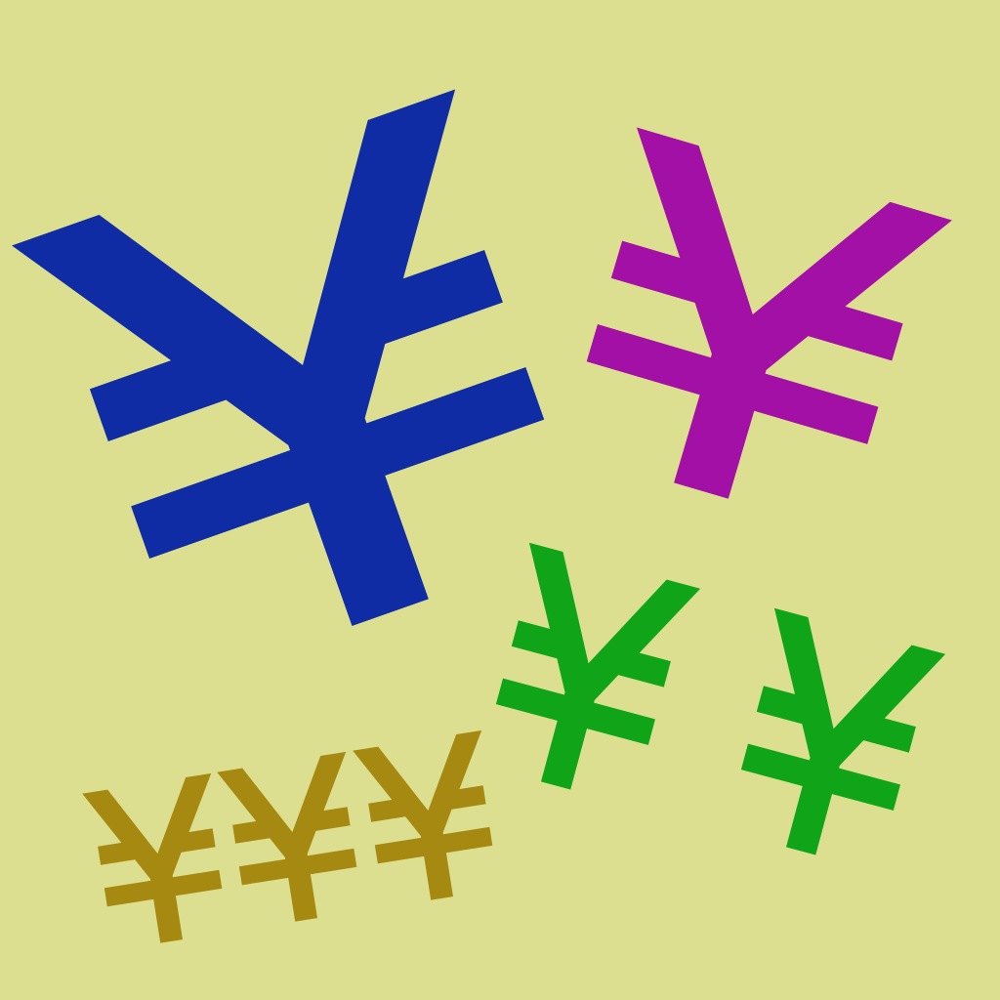
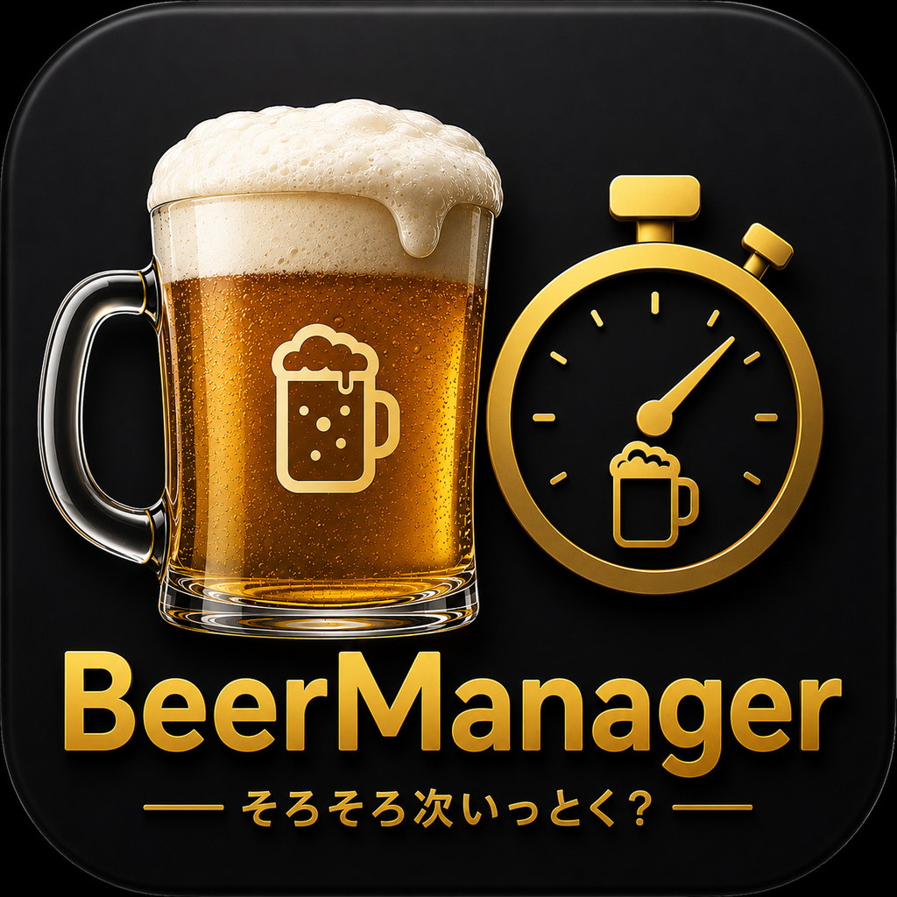
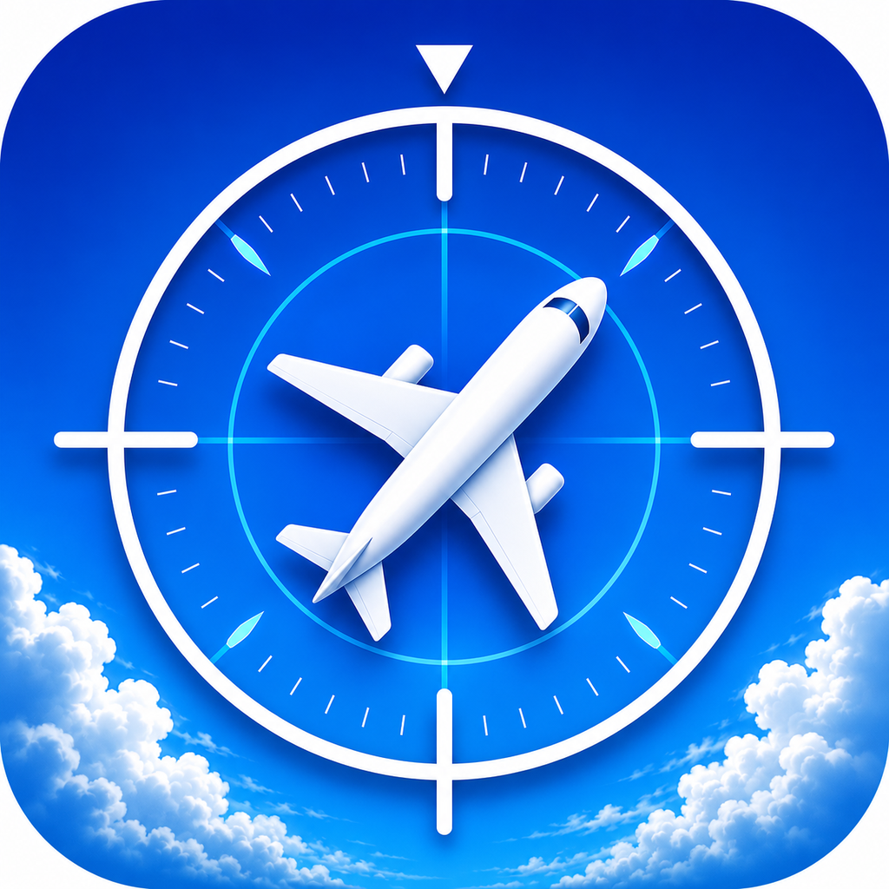

| App | Platform | App Name | Overview |
|---|---|---|---|
| iOS | カナやん |
西野家必須アイテム！ カナやんのこれまでのライブスケジュール、TV出演番組やそこで唄った曲、KanaChannelの日程などなど、いままでメモしてきた情報をアプリにしてみました。 これまでカナやんが世に出してきた曲の歌詞を「恋愛前」「恋愛中」「失恋」「友情」。。。。などなどにカテゴリとして分類し、 更に各カテゴリ内での歌詞の状況を分類しそれぞれに置かれたカテゴリや状況に応じて、それに適したカナやんの曲名をフィルタ出来るようにしてみました。 是非友だちの置かれた状況でフィルタして、カナやんの曲を紹介してあげてください！ｗ |
|
|
 | iOS | 簡単重みづけ割り勘計算 |
飲み会幹事必須アイテム！ お会計の金額を入力し、あとは価格帯別人数を選択して その重みづけをシークバーを左右に感覚的に動かすだけでリアルタイムに計算してくれます |
|
 | WatchOS | Beer Manager |
居酒屋で飲み物の注文数に対して今何個届いたのか？あと何個来てないのか？あと何個注文したら良いのか？判らなくなった事ありませんか？（笑 飲んでると余計に判らなくなるし、これを管理できる様なカウンターが欲しいと思ってこのアプリを作ってみました。 どうせなら以下の機能も追加してみました。 1. 注文から到着までの時間（リードタイム）をFIFOを想定して計測し「この店は頼んだらすぐ来る」「頼んでもすぐに来ない」を管理出来るようにした。（後で店ごとに振り返る事が出来る） 2. 到着から次の注文までの時間を計測して「自分の飲酒ペース」を管理。これも店名別に後で振り返る事を出来るようにした。 3. ビールだけの管理じゃつまらないので、ハイボール、サワー、酒、ワイン、ソフドリ・・ 等、必要なメニューを選べるようにし左右スワイプで各メニュー別にカウンタを準備。 4. 上記実績を居酒屋別に管理したい一方、店名をWatchから入力するのは面倒なので地図アプリ連携し近所の店名を一覧表示して選べるようにした。 5. お店のリードタイムと、自分の飲酒ペースを把握し、「そろそろ次頼んだら？」をメッセージと共に振動で教えてくれるようにした。 6. 店の制限時間である2時間（または90分）滞在可能な場合も左スワイプした画面で経過時間も把握可能で時間前になるとメッセージと共に振動で教えてくれる。 7. 飲み会終了（×マーク）をタップすれば、この日のTotal時間、飲んだグラス数、お店の注文平均リードタイム、自分の一杯あたりの飲むペース等がサマリー表示される。 8. 各飲み会の記録は保存され（後で削除も可能）、あとでグラフでお店別・メニュー別のリードタイムや、飲酒ペース、注文数などが確認できる。 9. Apple Watchの時計からアプリ起動できるようにした（コンプリケーション対応） 10. Watch OSのLanguageに連動して日本語モードと英語モードが自動切り替えを対応 |
|
 | iOS WatchOS | SkyPlane |
ふと空を見上げた時に見つけた飛行機。「あの飛行機はどこに行こうとしているのか？」「航空会社はどこなんだろう？」「航空機体名は何だろう？」などと思うことはありませんか？ このアプリは、そんな疑問に答えてくれます。 携帯電話（またはApple Watch）を見えている飛行機に向けて検索すれば、そのような以下のような情報が直ぐにわかります。 ・フライト番号(Flight) ・航空会社名(Airline) ・機体名（B787、A350など）(Aircraft) ・航空機体番号(Registration) ・出発地空港(From) ・到着地空港(To) ・自分の位置から飛行機までの距離(Distance) ・飛行機の高度(Altitude) ・飛行機の速度(Speed) ・飛行機が進んでいる方角(Azimuth, Track) |